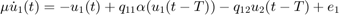
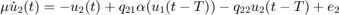
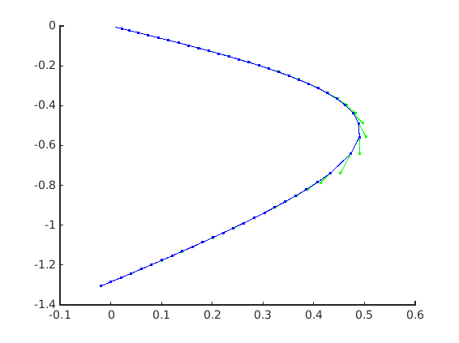
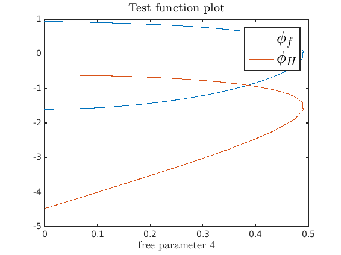
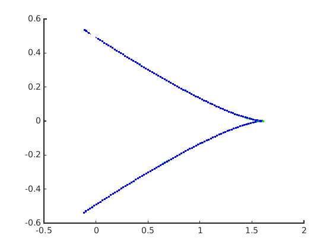
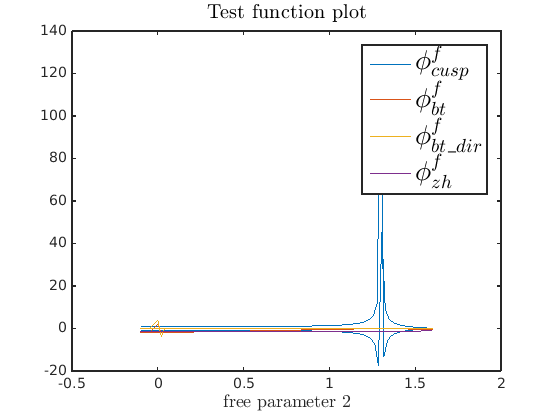
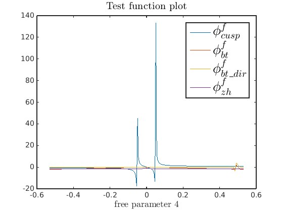

Demo - System with cusp and Takens-Bogdanov bifurcations
Demo contributed by Maikel Bosschaert
from Giannakopoulos, F. and Zapp, A. (2001). Bifurcations in a planar system of differential delay equations modeling neural activity. Physica D: Nonlinear Phenomena, 159(3):215-232.
Contents
Differential equations


(c) DDE-BIFTOOL v. 3.1.1(120), 02/09/2015
clear % clear variables close all; % close figures addpath('../../ddebiftool',... '../../ddebiftool_extra_psol',... '../../ddebiftool_extra_nmfm',... '../../ddebiftool_utilities'); disp('Cusp demo'); funcs=set_funcs(... 'sys_rhs', @cusp_rhs,... 'sys_tau', @()6,... 'sys_deri', @cusp_deri,... 'sys_mfderi',@(xx,par,varargin)cusp_mfderi(xx,par,varargin{:}));
Cusp demo
continue stst in E
Q=0; E=0; q11=2.6; q12=Q; q21=1; e1=E; e2=0; T=1; par = [q11,q12,q21,e1,e2,T]; stst_br = SetupStst(funcs,'x',[0;0],'parameter',par,... 'contpar',4,'max_step',[4 0.02],'max_bound',[4 1],'min_bound',[4 0],... 'newheuristics_tests',0); stst_br.method.continuation.plot = 1; [stst_br,s,f,r] = br_contn(funcs,stst_br,300); stst_br.method.bifurcation.plot_testfunctions=1; stst_br.method.stability.minimal_real_part=-5; stst_br=br_stabl(funcs,stst_br,0,0); stst_br=br_bifdet(funcs,stst_br);
BR_CONTN warning: boundary hit. BR_BIFDET: Fold detected near par(4) = 0.4899601374. BR_BIFDET: Fold located at par(4) = 0.4913668450. BR_BIFDET: Normal form coefficient: b = 0.7321765321 Current plot held 
continue fold point in (E,Q)
FPI=br_getflags(stst_br); start_ind = FPI(bif2num('fold'),1); [fold_branch, suc] = SetupFold(funcs, stst_br, start_ind, 'contpar', [2 4], 'dir', 4, 'step', 0.02); Qmin=-0.1; Qmax=2; Emin=-0.6; Emax=0.6; fold_branch.parameter.min_bound=[2 Qmin; 4 Emin]; fold_branch.parameter.max_bound=[2 Qmax; 4 Emax]; fold_branch.parameter.max_step=[2 0.02; 4 0.02]; figure; [fold_branch,s,f,r]=br_contn(funcs,fold_branch,300); fold_branch = br_rvers(fold_branch); [fold_branch,s,f,r]=br_contn(funcs,fold_branch,300); fold_branch.method.bifurcation.plot_testfunctions=1; fold_branch = br_stabl(funcs,fold_branch,0,0); fold_branch = br_bifdet(funcs,fold_branch);
BR_CONTN warning: boundary hit. BR_CONTN warning: boundary hit. BR_BIFDET: Bogdanov-Takens detected near par(2) = 0.0000000000, par(4) = 0.4913668450. BR_BIFDET: Failed to correct Bogdanov-Takens point. BR_BIFDET: Bogdanov-Takens detected near par(2) = 0.0199989457, par(4) = 0.4835320970. BR_BIFDET: Failed to correct Bogdanov-Takens point. BR_BIFDET: Bogdanov-Takens detected near par(2) = 0.0399981183, par(4) = 0.4757164567. BR_BIFDET: Failed to correct Bogdanov-Takens point. BR_BIFDET: Cusp detected near par(2) = 1.3179630819, par(4) = 0.0462438690. BR_BIFDET: Failed to correct cusp. BR_BIFDET: Bogdanov-Takens detected near par(2) = 1.3179630819, par(4) = 0.0462438690. BR_BIFDET: a = -0.1903821241, b = -0.9519106203, par(2) = 1.3000000000, par(4) = 0.0505079212. BR_BIFDET: Cusp detected near par(2) = 1.5990696079, par(4) = -0.0000094571. BR_BIFDET: Cusp located at par(2) = 1.6000000000, par(4) = -0.0000000000. BR_BIFDET: Normal form coefficients: b = -0.0000002484, c = 0.5555557861. BR_BIFDET: Bogdanov-Takens detected near par(2) = 1.5811766051, par(4) = -0.0008560336. BR_BIFDET: Failed to correct Bogdanov-Takens point. BR_BIFDET: Cusp detected near par(2) = 1.2852191807, par(4) = -0.0540913384. BR_BIFDET: Failed to correct cusp. BR_BIFDET: Bogdanov-Takens detected near par(2) = 1.2852191807, par(4) = -0.0540913384. BR_BIFDET: a = 0.1903821241, b = 0.9519106203, par(2) = 1.3000000000, par(4) = -0.0505079212.  